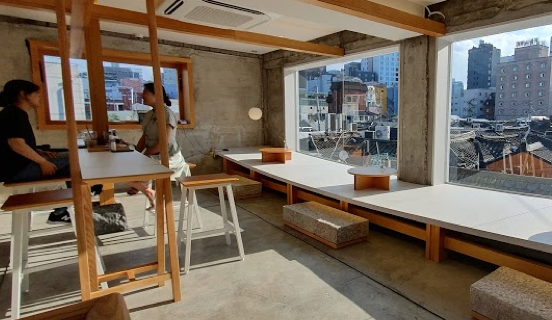
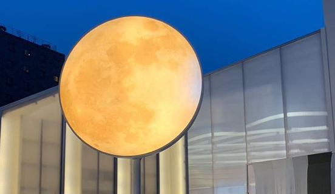

Kkilook House
The Kirk Bakery in Sunhwa-dong, Jung-gu, Seoul has also established itself in Iksun-dong. We serve delicious bakery menus such as baguettes, pretzel, and croissants, and sweet cakes.

Meal do
A bakery with a variety of freshly baked breads, cakes and scones. Most of all, it is gaining popularity as a beautiful photo zone at night. Meet delicious bread and pretty pictures

Saladaeng Bangkok
Saladaeng Bangkok, a Thai restaurant specializing in Thai cuisine in the middle of Seoul. Exotic interiors, pretty props and plants combine with Korean traditional hanok to create a special charm.